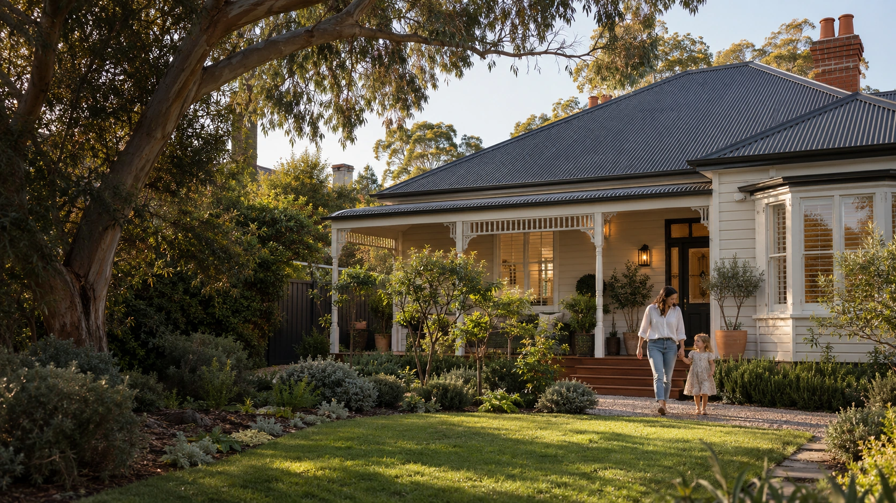
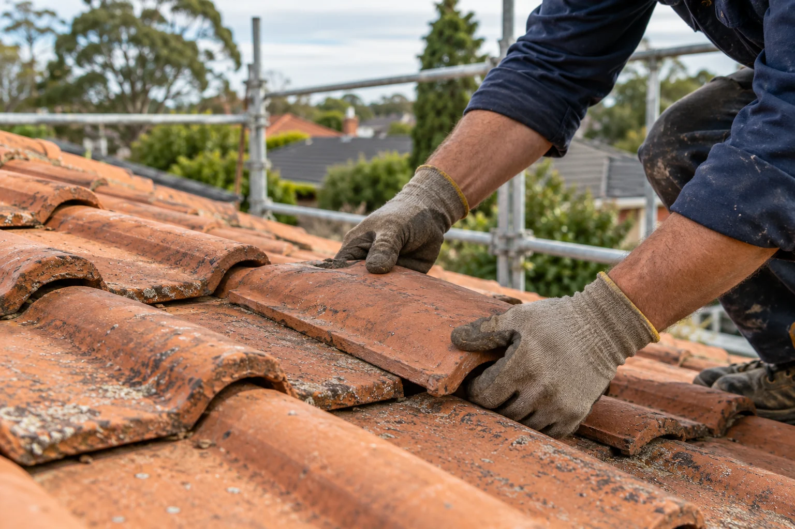
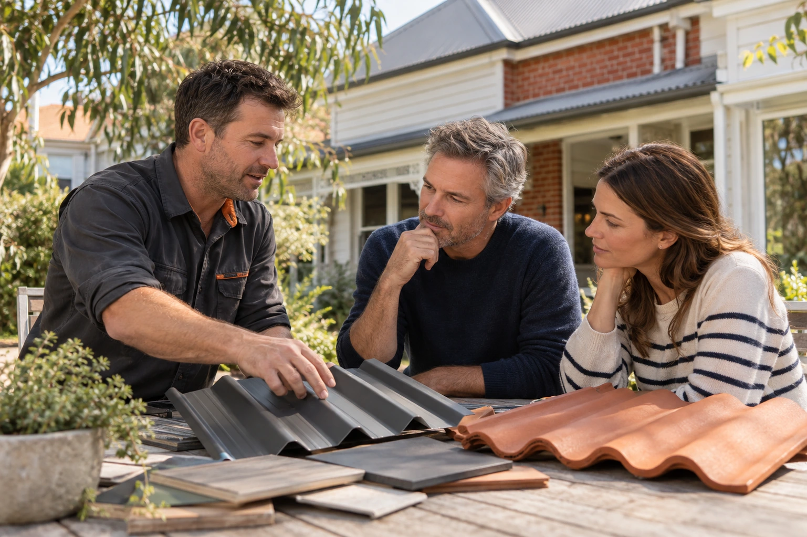
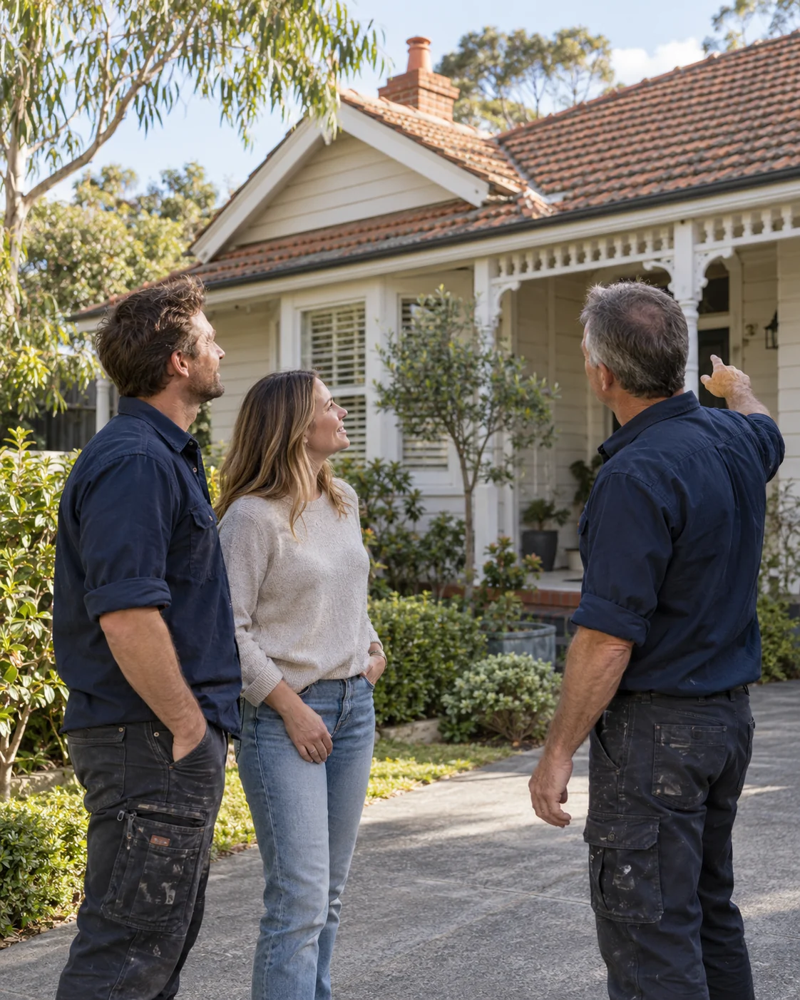
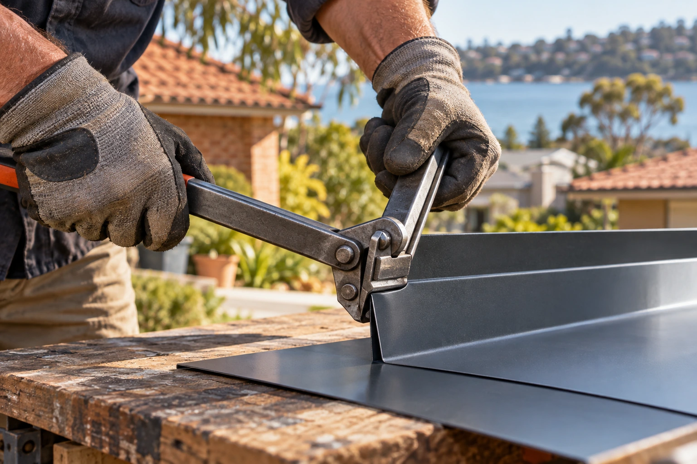
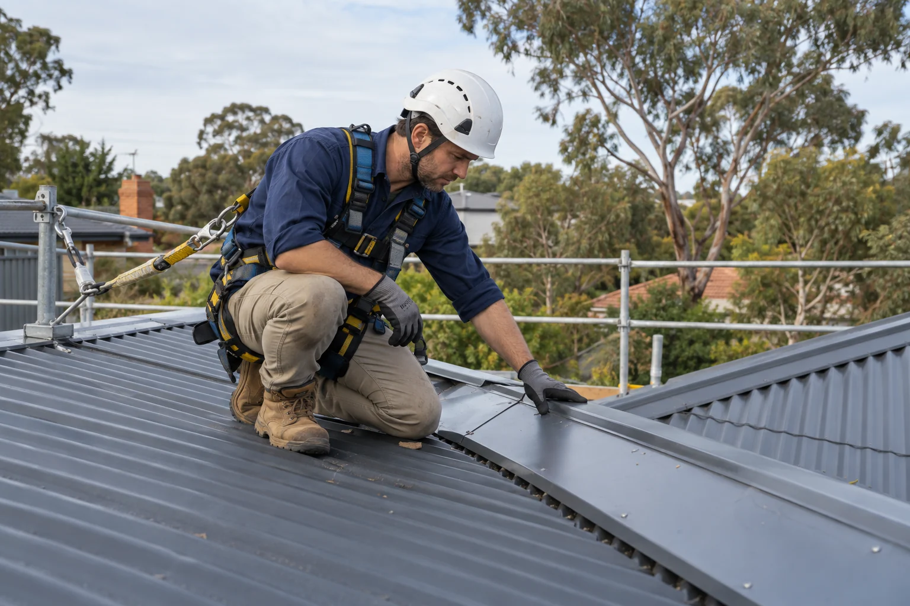
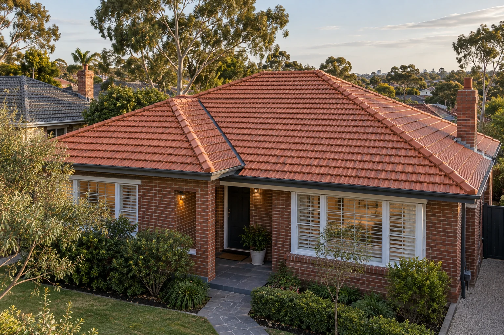

Leaks, loose tiles and tired flashings deserve a closer look. Start by understanding the source, then decide on the repair.
- Tile and flashing concerns
- Roof leaks and localised damage
- Practical advice on the next step

CONSIDERED ROOFING. BRIGHTON, MELBOURNE.
Good roofing is about more than what’s overhead.
It’s about looking after the life underneath.
Thoughtful work.
A place to call home.
THE HOME BENEATH THE ROOF
From familiar weatherboards to contemporary coastal homes, every roof has its own character. Every homeowner has their own questions.
We start by listening. Then we take a closer look, talk through the options and make the next step easier to understand. It’s a straightforward approach to one of the most important parts of your home.
Get to know Bayside01 / WHAT WE DO
Repair, restore or begin again.
Let’s find the approach that fits your home.

Leaks, loose tiles and tired flashings deserve a closer look. Start by understanding the source, then decide on the repair.
Give a roof worth keeping a fresh outlook. Its condition comes first, followed by a clear plan for repairs and the proposed finish.
Clean lines and a fresh perspective for new roofs and re-roofing. Explore a profile and colour that feel right for the whole house.
The finishing lines of your roof have an important part to play. Talk through concerns about guttering, downpipes and rainwater flow.
Not sure what is happening overhead? A closer look helps make sense of your roof’s condition and what might come next.


IT STARTS WITH PEOPLE.02 / THE WAY WE WORK
You should feel comfortable with the people looking after your home.
That means a conversation you can follow, a plan you understand and space to ask the questions that matter. We believe the way a job feels is part of the job itself.
“Look after the home.
Respect the people in it.”
03 / WHERE THE DIFFERENCE LIVES
The edge of a flashing. The line of a gutter. The way a finish sits with the rest of the house. A considered roof is a collection of considered details.
Look beyond the surface.Understand the condition before deciding on the finish.
Think about the whole home.Roofing, drainage and appearance should work together.
Make room for questions.Good decisions start with clear explanations.

04 / ROOF & HOME INSPIRATION
Different eras. Different rooflines.
A little inspiration for the place you call home.
Architectural inspiration. Images are illustrative, not completed customer projects.
What’s your roof’s next chapter?05 / NO NEED TO OVERCOMPLICATE IT
From the first question to the final details,
know what the next step looks like.
Tell us about your roof, what you have noticed and what you would like to achieve.
YOUR HOME. YOUR PLANS.Understand the current condition and the options that make sense for the property.
START WITH UNDERSTANDING.Work through the proposed scope, materials, finish and next steps before proceeding.
A PLAN YOU CAN FOLLOW.Keep communication open through the work and talk through the completed details.
CARE ALL THE WAY THROUGH.06 / OUR PATCH OF MELBOURNE
Brighton is our starting point. Homes across Melbourne’s Bayside and neighbouring suburbs are our focus.
Talk about your homeJust outside these areas? Let’s talk about where you are.
07 / BEFORE YOU GET STARTED
You do not need to know roofing.
Just know what you would like to ask.

A closer look is a good place to start.The roof’s condition and the extent of the problem are the starting point. Your plans for the home matter too. An inspection helps make the options clearer, so you can understand what each approach would involve.
Some older tiled roofs may be suitable for restoration. The tiles and the roof underneath need to be assessed first, with necessary repairs addressed before the proposed surface finish.
It may be an option. The existing roof, supporting structure, drainage and applicable requirements need to be considered before deciding on the right approach for the property.
Your suburb and a short description of the issue or project are a helpful start. If you know the roof type, include that too. Photos taken safely from the ground can help explain what you have noticed.
Check what each quote includes: the proposed work, materials, finish, exclusions and next steps. Ask for clarification if the scope differs, so you understand what you are comparing.
Of course. Tell us what you have noticed, even if you are unsure what caused it. A clear description helps start a useful conversation about what should happen next.
08 / YOUR ROOF’S NEXT CHAPTER
A small concern or a big plan.
We’d like to hear about it.
Tell us what you know about your roof and what you have in mind. There’s no need to have all the answers.

Good things start